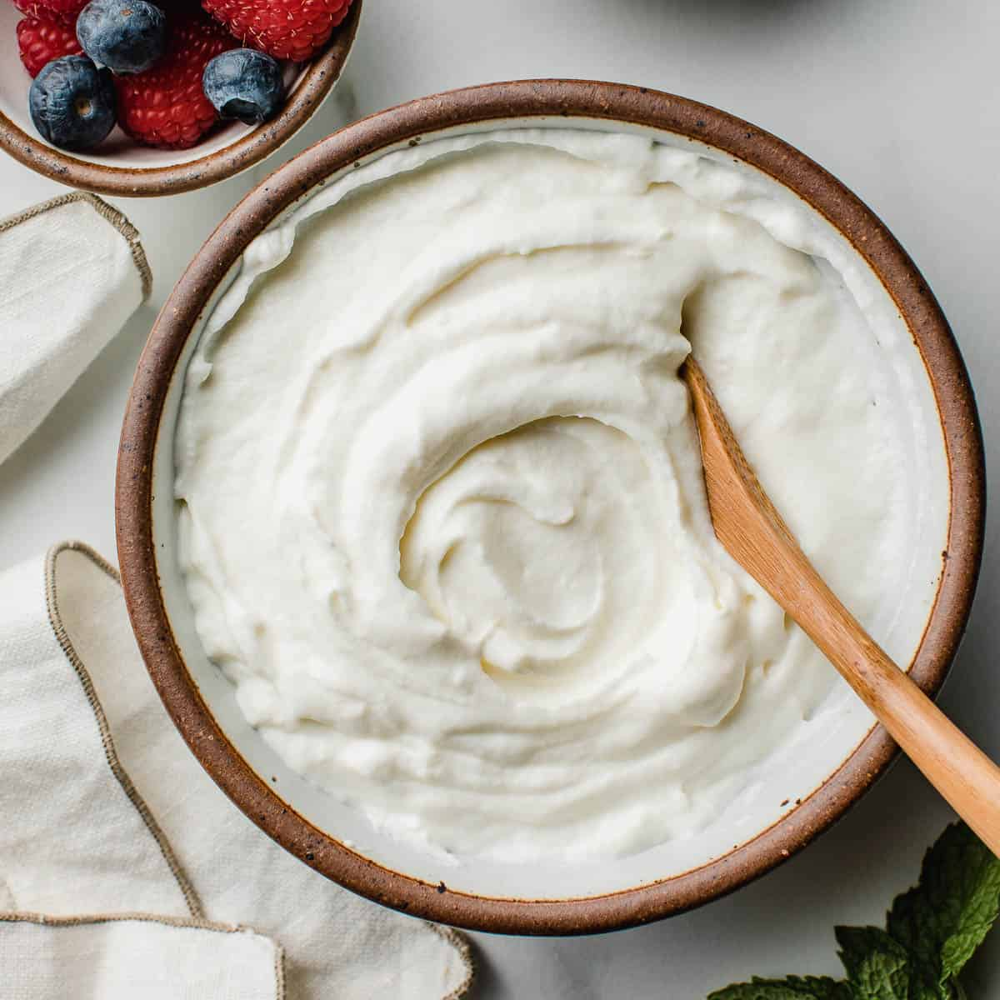

When using these ingredients , it's important to patch test first, especially if you have sensitive skin, to make sure you don't have any adverse reactions. Additionally, remember that natural products may not lather or feel the same as conventional cleansers, but they can still effectively cleanse the skin.
NATURAL PRODUCTS FOR ALL SKIN TYPES
RAW HONEY
HOW TO APPLY:
Look for raw, unprocessed honey, as it retains more of its beneficial properties compared to processed honey. Wet your face with warm water to open up the pores. Then, take a small amount of honey (about a teaspoon) and massage it gently onto your damp skin using circular motions. Leave it on for a few minutes to allow the honey to work its magic.Rinse your face thoroughly with lukewarm water to remove the honey. You may also use a soft washcloth or sponge to help remove the honey and any impurities from the skin.
BENEFITS:
- Honey contains natural antimicrobial agents that can help kill bacteria on the skin's surface.
- It attracts moisture from the air and helps retain it in the skin, keeping it hydrated and soft.
- The slight acidity of honey can help gently exfoliate the skin, removing dead skin cells and promoting cell turnover for a brighter complexion.
YOGURT
HOW TO APPLY:

Opt for plain yogurt. Start by washing your hands thoroughly to avoid bacteria. Then, splash your face with lukewarm water to dampen it. Take a small amount of yogurt (about a teaspoon) and gently massage it onto your damp skin using circular motions.Allow the yogurt to sit on your skin for a few minutes to give the lactic acid time to work its magic and exfoliate your skin. After a few minutes, rinse your face thoroughly with lukewarm water to remove the yogurt. You can use your hands or a soft washcloth to help remove it.Pat your skin dry with a clean towel.
BENEFITS:
- Yogurt contains lactic acid, a type of alpha hydroxy acid (AHA) that gently exfoliates the skin by loosening dead skin cells and promoting cell turnover.
- It effectively removes dirt, oil, and impurities from the skin's surface without stripping away its natural oils, making it suitable for all skin types.
- Yogurt helps to balance the skin's pH level, which is important for maintaining healthy skin
JOJOBA SERUM
HOW TO APPLY:
Start with cleansing your face. You can use one of the above cleansers to remove any makeup, dirt, and impurities.Dispense a few drops of jojoba oil onto your fingertips. You only need a small amount as jojoba oil is highly concentrated. Using gentle upward motions, massage the jojoba oil into your skin. Focus on areas that need extra hydration or attention, such as dry patches or fine lines. Give the oil a few minutes to fully absorb into the skin. It should leave your skin feeling soft, smooth, and hydrated, without any greasy residue. you can also mix it with aloe vera gel for added soothing properties or with essential oils for fragrance and additional skincare benefits.
BENEFITS:
- Jojoba oil closely mimics the skin's natural sebum, making it highly compatible with all skin types.
- Despite being lightweight, jojoba oil is deeply hydrating. It forms a protective barrier on the skin, preventing moisture loss and keeping the skin soft and supple.
- Jojoba oil is rich in vitamins E and B-complex, as well as minerals such as zinc and copper. These nutrients provide nourishment to the skin, promoting overall skin health.
ARGAN OIL
HOW TO APPLY:
Start with cleansing your face. You can use one of the above cleansers to remove any makeup, dirt, and impurities. Pour a few drops of argan oil into the palm of your hand. You only need a small amount, as argan oil is highly concentrated. Rub your palms together to warm the argan oil slightly. Gently Apply it in a cricular motions. This helps improve its absorption into the skin and makes it easier to apply. Focus on areas that need extra hydration or attention, such as dry patches, fine lines, or areas of inflammation. Give the argan oil a few minutes to fully absorb into the skin.
BENEFITS:
- Argan oil is abundant in vitamin E, a powerful antioxidant that helps protect the skin from free radical damage caused by environmental stressors such as UV radiation and pollution.
- Argan oil is rich in essential fatty acids, including omega-6 and omega-9 fatty acids. These fatty acids help maintain the skin's lipid barrier, preventing moisture loss and enhancing hydration
.
- Argan oil has emollient properties that help soften and smooth the skin, improving texture and elasticity. It penetrates deeply into the skin, delivering hydration and nutrients to the underlying layers. Regular use of argan oil can result in a more radiant, supple complexion.
ALOVERA
HOW TO APPLY:
You can simply cut a leaf from alovera plant and extract the gel from it. Before applying aloevera gel, make sure your face is clean. You can use a gentle cleanser to remove any dirt, oil, or makeup residueTake a small amount of aloe vera gel and apply it evenly to your face. Gently massage it into your skin using circular motions. Be careful around the sensitive eye area.Allow the aloe vera gel to dry on your face. It usually dries quickly and leaves a thin, moisturizing layer on the skin. You can follow up with your regular skincare routine if desired. Aloe vera gel can be used alone as a moisturizer
BENEFITS:
- aloe vera gel is composed of around 99% water, making it an excellent natural moisturizer. It helps to hydrate the skin, keeping it soft and supple.
- Aloe vera has anti-inflammatory properties, which can help to calm and soothe irritated or sensitive skin. It can be particularly beneficial for conditions like sunburn, eczema, or psoriasis.
- Aloe vera contains compounds like vitamins, enzymes, and amino acids that promote skin healing.
- Aloe vera gel contains antioxidants like vitamins C and E, which can help to neutralise free radicals and protect the skin from premature aging.
COCONUT OIL
HOW TO APPLY:
Make sure your skin is clean and free of any makeup or dirt.Coconut oil solidifies at cooler temperatures, so you may need to warm it up slightly to make it easier to apply.For best results, apply coconut oil to slightly damp skin. This helps lock in moisture and allows the oil to absorb more effectively. Using your fingertips, gently massage the coconut oil onto your skin using circular motions. Focusing on areas that are particularly dry or in need of moisture allow it some time to absorb into your skin before applying makeup or going to bed. Coconut oil can be quite emollient, so a little goes a long way. It's also great for targeted hydration on dry patches or as a nourishing treatment for your lips and cuticles.
BENEFITS:
- It's especially beneficial for dry or irritated skin. Simply apply a small amount of coconut oil to clean skin and massage it in .
- Coconut oil is rich in fatty acids, particularly lauric acid, which can penetrate deep into the skin to hydrate and moisturize. It helps to lock in moisture, keeping the skin soft and supple.
- coconut oil contains antioxidants such as vitamin E, which help protect the skin from damage caused by free radicals
- The fatty acids in coconut oil help strengthen the skin's natural barrier function, which is essential for retaining moisture and protecting against environmental stressors.
COFFEE SCRUB
PREPARATION:
In a small bowl, combine the finely ground coffee beans with the organic coconut oil. If you're using sugar, add it to the mixture as well. Mix everything together until you get a uniform consistency. For example, you can add a few drops of essential oils like lavender or tea tree oil for added fragrance and skin benefits. Keep it in a cool, dry place, away from direct sunlight. It's best to make small batches of the scrub and use it within a few weeks to ensure freshness.
HOW TO APPLY:
When you're ready to use the coffee scrub, scoop out a small amount and apply it to damp skin. Gently massage the scrub onto your face using circular motions, let it dry for half-an-hour. Then rinse it off thoroughly with lukewarm water. After, tap your face with dry towel .
BENEFITS:
- The texture of coffee grounds makes them an excellent natural exfoliant. When massaged onto the skin, coffee grounds help to slough away dead skin cells, dirt, and impurities, revealing smoother, brighter skin underneath.
- The massaging action of applying a coffee scrub to the skin helps to stimulate blood flow and circulation.
- Coffee contains antioxidants such as chlorogenic acid and melanoidins, which help to neutralize free radicals and protect the skin from oxidative damage. This can help to prevent premature aging and keep the skin looking youthful and healthy.
OAT MEAL SCRUB
PREPARATION:
If you're using whole rolled oats, grind them into a fine powder using a blender or food processor. Finely ground oatmeal will create a smoother texture for your scrub. In a small bowl, combine the finely ground oatmeal with honey. If you're using yogurt or milk for added moisture, you can add it to the mixture as well. Stir everything together until you get a thick consistency. Depending on your preference, you can adjust the consistency of the scrub. You can customize your oatmeal scrub by adding other ingredients based on your skin's needs. For example, you can add a few drops of essential oils like lavender or tea tree oil for added fragrance and skin benefits.
HOW TO APPLY:
When you're ready to use the oatmeal scrub, dampen your face with lukewarm water. Take a small amount of the scrub and apply it to your damp skin, avoiding the delicate eye area. Gently massage the scrub onto your skin using circular motions for 1-2 minutes. After massaging the scrub onto your skin, rinse it off thoroughly with lukewarm water. Make sure to remove all traces of the scrub from your skin.
BENEFITS:
- Finely ground oatmeal acts as a gentle exfoliant, helping to remove dead skin cells, dirt, and impurities from the skin's surface. This promotes cell turnover and reveals smoother, brighter skin underneath.
- Oatmeal contains anti-inflammatory properties that help to soothe and calm irritated or inflamed skin. It can provide relief for conditions like dryness, itching, and eczema.
- Oatmeal is a natural humectant, meaning it helps to attract and retain moisture in the skin
-
- The anti-inflammatory properties of oatmeal can help to reduce redness and inflammation associated with conditions like acne, rosacea, and sunburn
BESAN AND TURMERIC
HOW TO APPLY:
Mix 2 tablespoons of besan (gram flour) with 1 teaspoon of turmeric powder in a bowl. Add enough water or rose water to form a smooth paste. You can customise it according to your preference based on your skin's needs with other ingredients like honey, yogurt. Apply the paste evenly to clean, dry skin, using gentle, circular motions. Leave the pack on for 15-20 minutes to allow it to dry. Once dry, rinse off with lukewarm water and pat your skin dry with a towel. Depending on your preference, you can adjust the consistency of the face mask. You can customise your oatmeal scrub by adding other ingredients .
BENEFITS:
- This face mask is perfect for brightening and exfoliating the skin. Besan helps to absorb excess oil and remove impurities, while turmeric provides anti-inflammatory and antioxidant benefits, leaving your skin glowing and refreshed.
- This Face mask remove dead skin cells and reveal a smoother, more vibrant complexion making it ideal for oily or combination skin types.
- Meanwhile, turmeric reduce hyperpigmentation, and impart a luminous glow. It boasts anti-inflammatory and antibacterial properties, soothing irritation and combatting acne-causing bacteria. Rich in nutrients, this face pack nourishes the skin from within, leaving it soft, supple, and revitalized.
YOGURT AND CUCUMBER
HOW TO APPLY:
Begin by blending half a cucumber until smooth and mixing it with 2 tablespoons of plain yogurt in a bowl. You can customise it according to your preference based on your skin's needs with other ingredients. Apply the mixture evenly to clean, dry skin, using gentle, upward strokes. Leave the mask on for 10-15 minutes to allow the ingredients to penetrate the skin. Rinse off with cool water and pat your skin dry with a towel. Depending on your preference, you can adjust the consistency of the face mask.
BENEFITS:
- This face mask is perfect for refreshing and revitalizing the skin. Cucumber helps to hydrate and tone the skin, while yogurt gently exfoliates and brightens, leaving your complexion looking radiant and rejuvenated.
- With its deeply hydrating properties, this mask envelops your skin in a blanket of moisture, leaving it feeling rejuvenated and supple.
- The cooling sensation imparted by the cucumber soothes and refreshes, offering relief to tired or sun-kissed skin. The toning effects of cucumber work to refine pores, promoting a smoother, more even complexion.